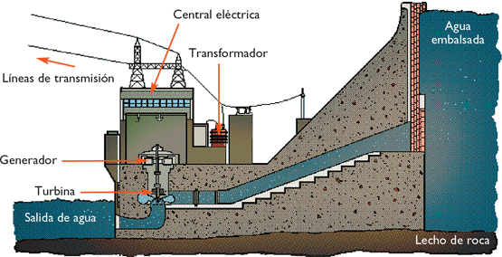

Energía Hidráulica
Energía hidráulica, energía hídrica o hidroenergía es aquella que se obtiene del aprovechamiento de las energías cinéticas y potenciales de la corriente del agua, saltos de agua o mareas. Se puede transformar a muy diferentes escalas.
¿Cómo funciona la energía Hidráulica?
La base de la energía hidráulica esta en aprovechar la caída del agua desde una determinada altura. Al momento que cae el agua pasa por turbinas y por la fuerza con la que cae provoca un movimiento de rotación, toda esta energía pasa por generadores para ser transformada en energía eléctrica.
La instalación necesaria para el uso y aprovechamiento de este tipo de energía es muy cara, por lo que es más común verlas en lugares que tienen gran afluencia de agua, ya que así es mayormente aprovechada la inversión.
Se considera energía renovable porque el recurso que se utiliza para generarla, es un recurso natural y disponible en determinadas zonas. Además de que una vez que se utilizo el agua y su fuerza, se le deja siga su curso, sin ser ensuciada ni contaminada.
¿Cómo se la Aprovecha?
Como hemos dicho,la energía hidráulica es la energía que se obtiene a partir del agua de los ríos. Es una fuente de energía renovable y supone el 7% del consumo mundial de energía primaria.
De forma indirecta tiene al Sol como origen. La radiación solar en forma de calor evapora el agua de los mares formando las nubes, que a su vez se transformarán en lluvia o en nieve, asegurando así la perennidad del ciclo. Luego, el efecto de la gravedad terrestre permite aprovechar los caudales de agua descendentes gracias a las presas que se construyen para retenerla en embalses o pantanos artificiales. Estos constituyen grandes depósitos energéticos o de abastecimiento.
La mayoría de las presas hidráulicas se destinan a la producción de energía eléctrica utilizando turbinas hidráulicas. Los países con gran potencial hidráulico y que disponen de caudales de ríos constantes y abundantes obtienen la mayor parte de la electricidad en centrales hidráulicas por sus grandes ventajas, entre ellas la de utilizar un recurso natural que solo hay que encauzar y es gratuito. Además puede utilizarse para otros fines, como el abastecimiento humano o el riego. Por otra parte, se trata del único recurso renovable almacenable, por lo que es muy útil para atender inmediatamente puntas de la demanda.
Pero también presenta inconvenientes por la dificultad de hacer predicciones fiables de los caudales de los ríos, puesto que están sometidos a la variabilidad de los ciclos meteorológicos con períodos secos y húmedos y de imposible control. Los emplazamientos hidráulicos suelen estar lejos de las grandes poblaciones, por lo que es necesario transportar la energía eléctrica producida a través de costosas redes de transmisión. Otro aspecto poco favorable es el efecto negativo que puede tener la creación de un embalse sobre el entorno, con problemas de alteración de cauces, erosión, incidencias sobre poblaciones, pérdida de suelos fértiles, etc.
Estos inconvenientes, unidos a las grandes inversiones necesarias en este tipo de centrales, y a la cada vez más difícil localización de emplazamientos son los que impiden una mayor utilización de esta fuente energética. Sin embargo la energía hidráulica sigue siendo la más empleada entre las fuentes de energía renovables para la producción de energía eléctrica. Sirvan como ejemplo la presa de Itaipú, en Brasil, sobre el río Paraná con 14.000 MW de potencia en continua operación y que abastece el 15% de la energía de Brasil y el 95% de Paraguay, y el sistema de las Tres Gargantas, en China, con 18.000 MW instalados.